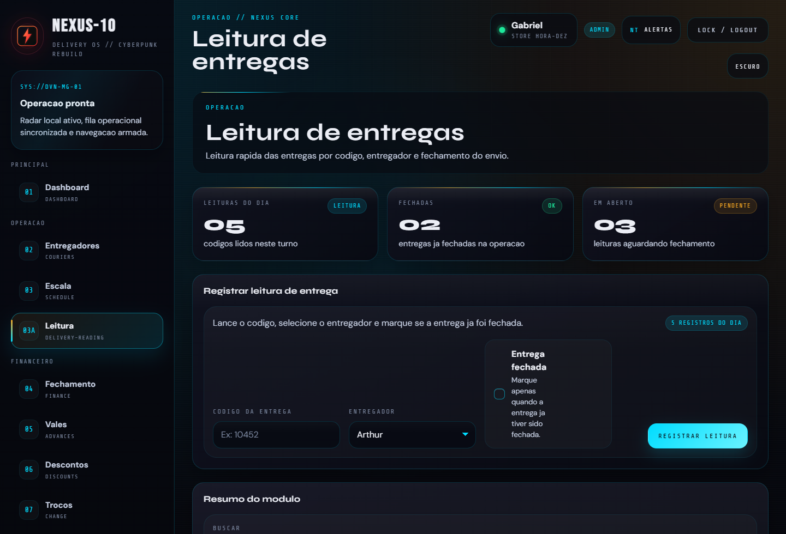
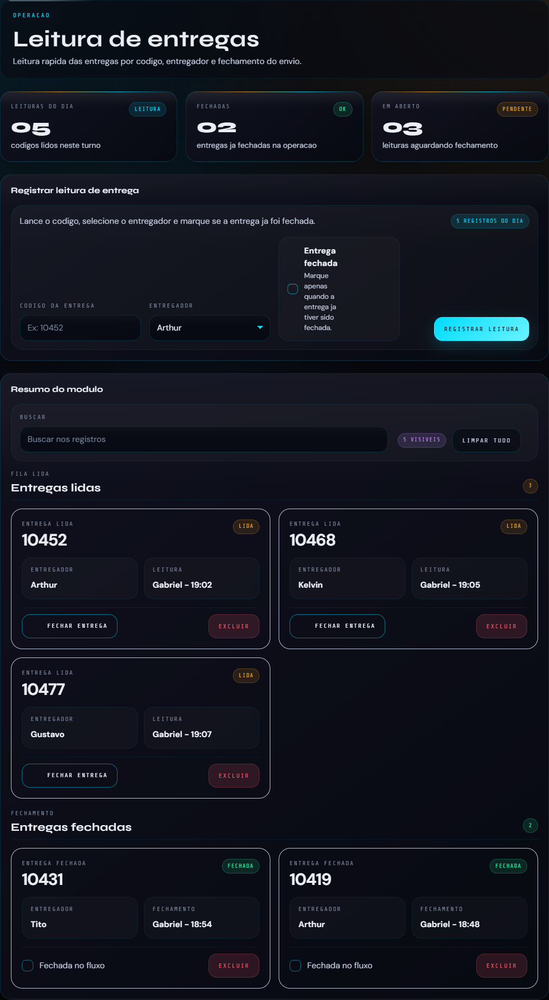
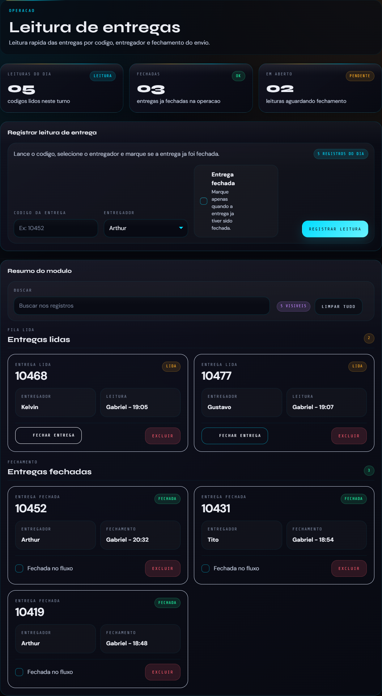
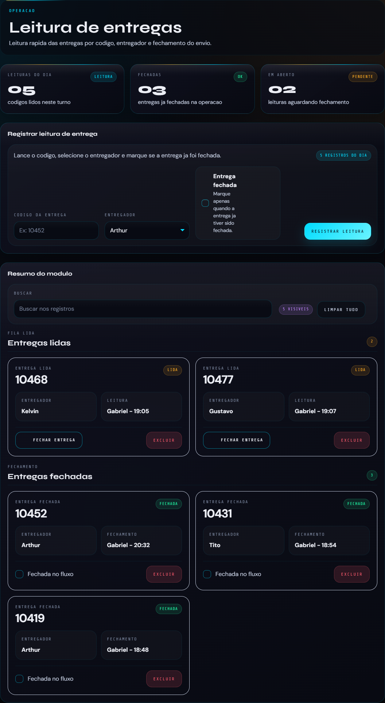

Leitura de entregas mais clara e pronta para operacao
Esta apresentacao mostra a nova aba de leitura de entregas em versao desktop, com foco em fluxo rapido, organizacao visual e separacao clara entre leituras em aberto e entregas ja fechadas.

Area principal com entregas lidas

Cadastro simples com codigo da entrega e entregador, sem atrito na operacao.
O botao de fechamento fica visivel no proprio card, sem passos extras.
Ultima atualizacao fica no card para consulta imediata entre operadores.
A fila de entregas lidas funciona como uma camada operacional de acompanhamento. O time enxerga rapidamente o que ja entrou no fluxo, quem esta responsavel e o que ainda precisa ser fechado.
Fechamento com feedback forte
Ela entra na fila principal com destaque proprio e foco em resolucao rapida.
O card recebe um feedback visual mais forte para confirmar a acao com seguranca.
A fila em aberto continua limpa, enquanto as entregas concluidas ficam organizadas abaixo.
Esse comportamento reduz duvida, melhora conferencia e deixa o andamento do turno muito mais claro.

Area dedicada para entregas fechadas

O que ainda esta em andamento nao se mistura com o que ja foi encerrado.
A operacao consegue revisar o historico imediato do turno sem poluicao visual.
Codigo, entregador e horario de fechamento continuam visiveis no estado final.
A base ja suporta novos filtros, rastreios e integracoes futuras da operacao.